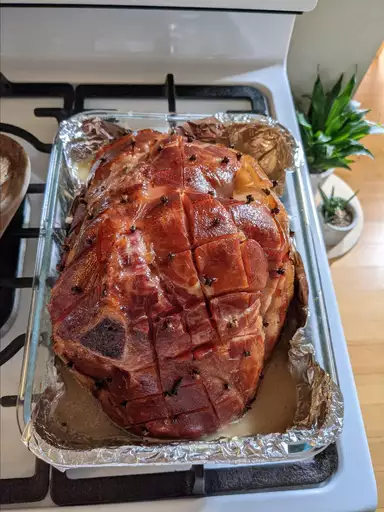
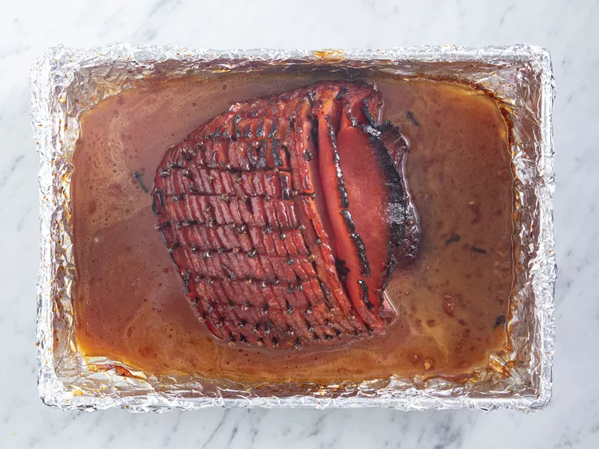

This ham tastes very much like the famous honey baked ham but costs much less,
and there's no need to fight the crowds at holiday time.It is very good.
You can even buy the ham presliced to make it easier and more like the original.
I make this while preparing the rest of the meal in the kitchen so that I don't forget to baste
You'll need just five ingredients for this top-rated honey-glazed ham recipe:
This recipe calls for one 5-pound ready-to-eat ham. If your ham is larger or smaller, you'll need to adjust the recipe.
Aromatic whole cloves add warm, spicy-sweet flavor.
Of course, you'll need honey. Pro-tip: Spray your measuring cup with cooking spray so the honey slides out easily.
Dark corn syrup adds more flavor and contributes to caramelization. Some reviewers suggest substituting brown sugar or using a combination of corn syrup and brown sugar.
Butter adds and helps retain moisture, resulting in a juicy honey-baked ham that's impossible to resist.
Preheat oven to 325 degrees F (165 degrees C).
Score ham, and stud with the whole cloves. Place ham in foil lined pan.
Scored raw ham stuffed with cloves, resting on a foiled baking sheet with a knife off to the side.
In the top half of a double boiler, heat the corn syrup, honey and butter. Keep glaze warm while baking ham.
Overhead of corn syrup in a sauce pan.
Brush glaze over ham, and bake for 1 hour and 15 minutes in the preheated oven.
ham every 10 to 15 minutes with the honey glaze. During the last 4 to 5 minutes of baking,
turn on broiler to caramelize the glaze. Remove from oven, and let sit a few minutes before serving.
Overhead of baked and basted ham resting in glaze and in baking sheet.
